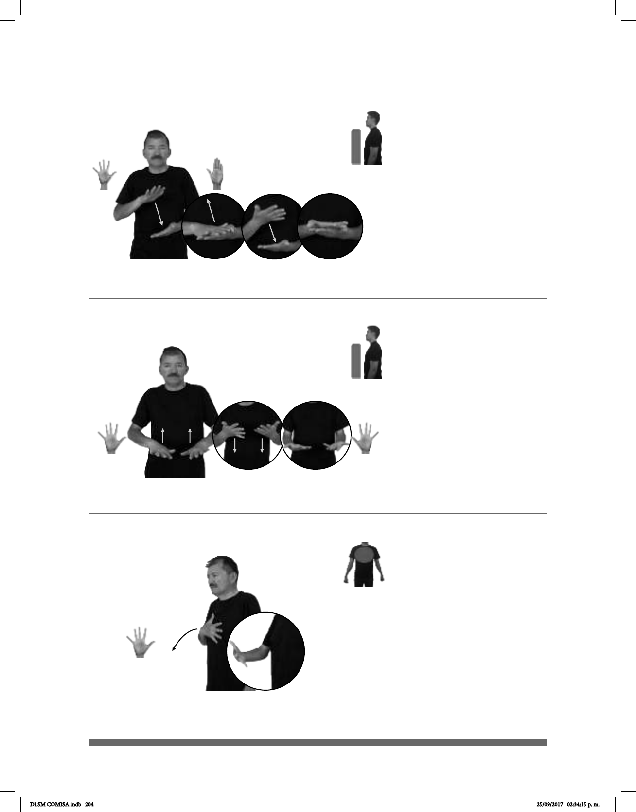

204
Seña: SB
MD 5.1, MB B-P.2
La MD inicia con la
palma hacia abajo y termina con la
palma hacia arriba. MB palma hacia
arriba.
A la altura del abdomen.
MD sobre MB.
MD el antebrazo gira y
cambia la orientación de la mano.
v. tr. Preparar algún
alimento poniéndolo directamente al
fuego o sobre una parrilla o comal con
muy poca grasa o sin ella.
Seña: SS
5.1
Las palmas inician
hacia abajo y terminan hacia arriba.
Del abdomen al pecho.
Recto mientras los
antebrazos giran y cambian la
orientación de las manos.
v. tr. Preparar algún
alimento poniéndolo directamente al
fuego o sobre una parrilla o comal, con
muy poca grasa o sin ella.
(5-G 35) Asar (B)
(5-G 36) Asco
1
2
(A)
(5-G 34) Asar (A)
______________________o.i.g._
CARNE ASAR pro-TÚ GUSTAR
¿A ti te gusta la carne asada?
_____________________o.i.g._
CARNE ASAR pro-TÚ GUSTAR
¿A ti te gusta la carne asada?
Seña: SM
5.1
Palma hacia adentro.
Sobre el pecho.
La mano se mueve
formando un arco hacia el frente.
1. sust. m. Sensación de
malestar estomacal, generalmente
acompañada de ganas de vomitar,
provocada por algo que se ha comido o
bebido. 2. adj. Que provoca asco o
repugnancia.
__________________neg_
ESO pro-YO NO-GUSTAR, ASCO
Eso no me gusta, me da asco.
DLSM COMISA.indb 204 25/09/2017 02:34:15 p. m.